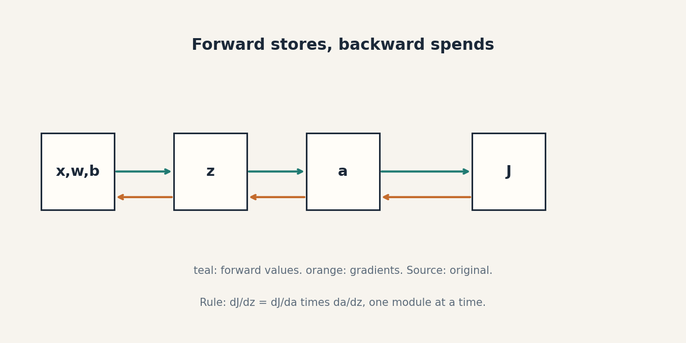
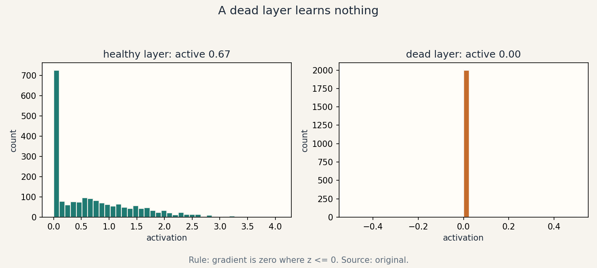

Lesson 07 · Neural nets, backprop
Lesson 07, Neural networks and backpropagation
Unit: cs229-U07. Leaf concepts: cs229-U07-C01 to C12. Date: 2026-10-06. Baseline: October 6, 2026.
Source mapping
Chapter 7 of the notes (SRC-01, PDF pages 81-114) was read in substantial part on 2026-10-06: section 7.1 (nonlinear models, losses, SGD), section 7.2 (single neuron, ReLU, stacking, two-layer nets, vectorization), section 7.3 (modules: linear, activation, layer norm with the scaling invariance proof, convolution), section 7.4 (backprop theorem, chain-rule perspective, backward functions). Details of 7.4.3-7.4.4 not exhaustively read. Marked accordingly below. Leaf rows carry SOURCE ATTRIBUTION PENDING until the RUN 6 pass.
Scope and objectives
Scope: nonlinear hypotheses built from stacked modules, and the gradient machinery that trains them.
Objectives: the learner can (1) write a two-layer net in math and code, (2) explain each standard module, (3) pick an initialization, (4) derive a backward pass by hand, (5) vectorize over a batch, (6) run a gradient check, (7) diagnose dead neurons and exploding gradients.
Dependencies
Prerequisites: P05, P11, P12 (shared bridges, linked).
Not-yet-understood list:
- Why nonlinearity matters (remediated in SL-01).
- Module zoology (remediated in SL-02).
- Backprop as message passing (remediated in SL-04).
- Gradient checking (remediated in SL-06).
SL-01: Nonlinear hypotheses and multilayer structure
Covers C01 (nonlinear hypothesis), C02 (multilayer structure).
Source anchor
SRC-01 sections 7.1-7.2, pages 81-88. The kinked housing price, the ReLU neuron, stacking into family size/walkable/school quality, the two-layer equations.
Motivating question
House prices cannot go negative. A line says they can. What is the smallest change that fixes this?
Mental model
One neuron: ReLU(w^T x + b) = max(w^T x + b, 0). The kink at zero floors the price. Stack neurons: each hidden unit computes one derived feature. The output layer combines them. Depth composes simple kinks into complex curves.
Objects, symbols, shapes
- Two-layer net: z_j = w_j^{[1]T} x + b_j^{[1]}, a_j = ReLU(z_j), output = w^{[2]T} a + b^{[2]}.
- x in R^d, m hidden units, w_j^{[1]} in R^d, w^{[2]} in R^m.
- Vectorized: Z^{[1]} = W^{[1]} x + b^{[1]}, A^{[1]} = ReLU(Z^{[1]}), with W^{[1]} in R^{m x d}.
Computed example
x = 2000 sqft. w = 0.3, b = -400. Score: 600 - 400 = 200. ReLU: 200. Price prediction 200 (thousand). x = 1000: score -100, ReLU 0. The kink floors at zero.
Why the nonlinearity is load-bearing
Stack two linear layers: W^{[2]}(W^{[1]} x) = (W^{[2]} W^{[1]}) x: still linear. Without activation, depth adds nothing. The activation is what makes depth matter.
Correctness checks
- Output shape matches the task: scalar for regression, k logits for k classes.
- Removing all activations must collapse to a linear model. Test this.
Nearest alternative
Kernel methods (U05): fixed nonlinear features, convex training, no learned representation.
Failure case
Sigmoid activations in a 50-layer net: gradients shrink by ~0.25 per layer and vanish. ReLU was adopted partly to fight this.
SL-02: Basic modules
Covers C03 (basic modules), C08 (activation), C10 (normalization).
Source anchor
SRC-01 section 7.3, pages 94-99. Linear module, ReLU, layer norm with scaling invariance (7.45), RMSNorm, 1-D/2-D convolution with parameter sharing.
The module list
- Linear: z = W x + b. The workhorse. Backward: needs x and the upstream gradient.
- ReLU: max(z, 0). Backward: pass the gradient through where z > 0, else zero.
- Sigmoid/tanh: squashing activations. Backward: g(1-g). Gradients vanish at saturation.
- Softmax: vector to distribution (U03).
- LayerNorm: z -> (z - mean)/std, then scale/shift by learnable gamma, beta. Key property (notes 7.45): LN(alpha W x) = LN(W x) for alpha > 0: scaling the weights does not change the output. This stabilizes training.
- RMSNorm: like LayerNorm without mean-centering. Used in LLaMA/Qwen (notes 7.51).
- Conv1D: z_i = sum_j w_j x_{i+j}: shared weights, O(k m) time, k parameters vs m^2 for dense.
Computed example: LayerNorm
z = [1, 2, 3]. Mean 2, std 0.8165. Normalized: [-1.2247, 0, 1.2247]. Scale by alpha = 5 first: [5, 10, 15], mean 10, std 4.0825, normalized: [-1.2247, 0, 1.2247]. Identical: the invariance.
Correctness checks
- LayerNorm output has mean ~0, std ~1 (before gamma, beta).
- Conv output length matches the padding math.
- Every module’s backward contract (SL-04) type-checks: upstream gradient shape equals the module output shape.
Nearest alternative
BatchNorm: normalize over the batch, not the features. Different statistics, different train/test behavior.
Failure case
Forgetting the model is in train vs eval mode for BatchNorm: test uses stale batch statistics and predictions shift. LayerNorm has no such mode split, one reason language models prefer it.
SL-03: Initialization
Covers C09 (initialization).
Motivating question
All weights start at zero. What happens?
Mental model
Zero init: every hidden unit computes the same thing, gets the same gradient, and stays identical forever. Symmetry never breaks. Random init breaks it. Scale matters too. Too large, activations explode. Too small, they vanish. Xavier/Kaiming set the variance so the signal keeps its scale across layers: Var(W) = 1/fan_in (Xavier) or 2/fan_in (Kaiming for ReLU).
Computed example
1000 x 1000 matrix, entries N(0, 1). x unit variance. Var(z_i) = 1000 * 1 * 1 = 1000: activations explode by sqrt(1000) ~ 31.6 per layer. With Xavier scaling 1/sqrt(1000): Var preserved at 1.
Correctness checks
- After init, activation variance across a batch is O(1) at every layer. Measure it.
- No two hidden units share identical weights.
Nearest alternative
Pretrained init (U13): start from a trained model instead of random.
Failure case
Zero init on a 3-layer net: the network trains as a linear model no matter the depth. Silent and common in hand-rolled code.
SL-04: Backpropagation
Covers C04 (scalar/vector derivatives), C05 (backward contracts), C06 (chain rule).
Source anchor
SRC-01 section 7.4, pages 100-112 (7.4.1-7.4.2 read, 7.4.3-7.4.4 partially). Theorem: a circuit of size N has its gradient computable in O(N). Chain rule as a linear map from upstream to downstream gradients.
Motivating question
The loss depends on 1e6 parameters through 50 layers. How do we get all 1e6 derivatives without 1e6 forward passes?
Mental model
Forward pass: compute and store every intermediate. Backward pass: start with dJ/dJ = 1 and walk backward. Each module answers one question: given dJ/d(output), what is dJ/d(input) and dJ/d(params)? The chain rule composes these answers. Cost: one forward plus one backward, O(N) total (notes Theorem 7.4.1).
The backward contract
For u = g(z), J scalar: dJ/dz_i = sum_j dJ/du_j * dg_j/dz_i. The map from dJ/du to dJ/dz is linear. The map itself depends on z. Each module implements this map using only local info (its input and the upstream gradient).
Worked example: one ReLU neuron
Forward: z = w^T x + b, a = ReLU(z), J = (1/2)(a - y)^2. Numbers: x = [1, 2], w = [0.5, -0.5], b = 0.5, y = 1. z = 0.5 - 1 + 0.5 = 0. a = 0. J = 0.5. Backward: dJ/da = a - y = -1. ReLU at z = 0: subgradient. Take 0 (convention). dJ/dz = -1 * 0 = 0. dJ/dw = dJ/dz * x = [0, 0]. dJ/db = 0. The dead neuron (z <= 0) kills the gradient: nothing learns here.
Change b to 1.5: z = 1.0, a = 1.0, J = 0. dJ/da = 0: already perfect, no update. Change y to 3: dJ/da = 1 - 3 = -2. dJ/dz = -2. dJ/dw = [-2, -4]. dJ/db = -2. Gradient descent: w := w - alpha * [-2, -4].
Vectorized backward
dJ/dW^{[1]} = (dJ/dZ^{[1]}) x^T (outer product), dJ/db^{[1]} = dJ/dZ^{[1]}, dJ/dx = W^{[1]T} (dJ/dZ^{[1]}). Shapes: if Z^{[1]} is (m,), dJ/dZ is (m,), dJ/dW^{[1]} is (m, d). Every backward equation must balance shapes.
Correctness checks
- Gradient check (SL-06): the ultimate arbiter.
- dJ/dz has exactly the shape of z. Always.
- The loss must decrease on a gradient step with small alpha.
Nearest alternative
Forward-mode autodiff: efficient for few inputs, many outputs. Reverse mode (backprop) wins for many parameters, one loss.
Failure case
Forgetting to store the forward intermediates: recomputing them wrong (e.g., with dropout on) gives wrong gradients. Frameworks cache them for this reason.
Russian-doll ladder for backprop
- Shell 0: Question: how do 1e6 derivatives cost one forward pass? Observable: wall-clock ratio ~2x.
- Shell 1: Toy: the one-neuron numbers above.
- Shell 2: Objects: intermediates, upstream gradient.
- Shell 3: Rule: each module maps upstream to local gradients.
- Shell 4: Derive: the ReLU neuron backward pass.
- Shell 5: Invariant: shapes match. Gradient check passes.
- Shell 6: Change one factor: z from -0 to 1. Predict the gradient revives. Verify.
- Shell 7: Counterexample: a non-differentiable module (hard threshold) breaks the chain. The gradient is zero or undefined.
- Shell 8: Compare: backprop vs finite differences on 100 params: 2 passes vs 200.
- Shell 9: Extension: time forward vs backward vs parameter count. Falsifiable claim: the ratio stays near 2-3x across sizes.
- Shell 10: Production: a training job NaNs at step 10k. The decision is which module’s backward produced the first inf (gradient logging per module).
SL-05: Batch vectorization
Covers C07 (batch vectorization).
Source anchor
SRC-01 sections 7.2 (vectorization) and 7.4.4, plus Algorithm 2 (mini-batch SGD), pages 83, 88, 112.
Motivating question
Looping over 10,000 examples in Python takes seconds. The GPU sits idle. How do we feed it?
Mental model
Stack B examples into a matrix X of shape (B, d). Z = X W^T + b: one matrix multiply does B examples at once. The backward pass is the same story with batched outer products. Mini-batch SGD (notes Algorithm 2) averages B gradients per step: less noise than SGD, more parallelism than full batch.
Computed example
B = 32, d = 10, m = 20. X (32, 10), W (20, 10). Z = X @ W.T: (32, 20). dJ/dZ (32, 20). dJ/dW = (dJ/dZ).T @ X: (20, 10). Shapes balance.
Correctness checks
- Batched loss equals the mean of per-example losses. Test on B = 4 by hand.
- dJ/dW from the batch equals the mean of per-example dJ/dW. Test this.
Nearest alternative
Per-example loop: correct, slow, useful only for debugging.
Failure case
Broadcasting bug: X (B, d) times W (d, m) vs W (m, d): a silent wrong answer if B == m. Shape audits catch it.
SL-06: Gradient checks
Covers C11 (gradient checks).
Motivating question
You wrote backprop by hand. How do you know it is right?
Mental model
Finite differences: dJ/d theta_i ~= [J(theta + h e_i) - J(theta - h e_i)] / (2h). Slow (2 forward passes per parameter) but independent of your backward code. Use it on a tiny net with few parameters, compare, then trust backprop at scale.
Computed example
J(w) = (1/2)(ReLU(w2) - 1)^2 at w = 1: forward gives J = (1/2)(2-1)^2 = 0.5. Analytic: dJ/dw = (2-1)2 = 2. Finite diff h = 1e-5: [J(1+h) - J(1-h)]/(2h): J(1+h) = 0.5(2+2h-1)^2 = 0.5(1+2e-5)^2 = 0.50002. J(1-h) = 0.49998. Diff: 0.00004/2e-5 = 2. Match.
Protocol
- Check on a small net (tens of params), random data.
- Relative error below 1e-5 for smooth modules.
- ReLU at exactly 0: skip or expect mismatch (the kink). Do not check through dropout or other randomness.
Correctness checks
- The check passes before any training run with new backward code.
- Analytic and numeric agree to 1e-7 on linear modules.
Nearest alternative
torch.autograd.gradcheck: the same idea, built in.
Failure case
Gradient checking a 1e6-parameter net: 2e6 forward passes. Check small, scale with confidence.
SL-07: Optimization failures
Covers C12 (optimization failures).
Motivating question
The loss flatlines at a bad value. What broke?
The failure catalog
- Dead ReLUs: a large gradient pushes z below 0 for all data. The neuron never recovers (gradient is zero there). Diagnose: fraction of zero activations near 1. Fix: lower LR, better init, LeakyReLU.
- Vanishing gradients: sigmoid/tanh stacks shrink gradients geometrically. Diagnose: gradient norms per layer decay to zero. Fix: ReLU, residuals, normalization.
- Exploding gradients: large weights compound. Diagnose: gradient norm spikes, loss NaN. Fix: gradient clipping, smaller init, normalization.
- Bad conditioning: ravines in the loss. Diagnose: slow zigzag progress. Fix: Adam, normalization.
- Saddle points: gradient zero, not a minimum. Rare to get stuck in practice at scale, but flat regions slow progress.
Computed example
50-layer sigmoid MLP, each layer gradient scaled by ~0.25 max: total shrink 0.25^50 ~ 1e-30. First layers learn nothing. Same net with ReLU and proper init: gradients survive.
Correctness checks
- Log gradient norms per layer per 100 steps. A healthy run keeps them within a few orders of magnitude.
- Activation histograms: not all-saturated, not all-dead.
Nearest alternative
Second-order methods: better steps, worse scaling. Adam is the practical middle.
Failure case
Blaming the model for an optimizer failure: the architecture was fine, the learning rate was 10x too high. Always check the training curves first.
Assessment
Breadth recall
E01: Write the two-layer forward equations. E02: Why is the activation load-bearing? E03: State the backward contract in one sentence. E04: State the LayerNorm scaling invariance. E05: Why does zero init fail? E06: State the gradient-check formula.
Deep oral ladders
L01 (backprop): (1) Define the backward contract. (2) Toy: the one-neuron numbers. (3) Derive dJ/dw for the ReLU neuron. (4) Implement and gradient-check. (5) Compare backprop vs finite differences cost. (6) Debug: gradients are all zero. Name two causes. (7) Critique: the chain rule needs differentiability. where does it fail? (8) Design: debug a NaN at step 10k.
L02 (modules): (1) List five modules and their shapes. (2) Toy: LayerNorm on [1,2,3]. (3) Prove the scaling invariance. (4) Implement LayerNorm forward and backward. (5) Compare LayerNorm vs BatchNorm train/test behavior. (6) Debug: test predictions shift after training. Name the cause. (7) Critique: normalization changes the optimization geometry. what is lost? (8) Design: pick the norm layer for an LLM.
Analytical exercises
E07: One neuron, x = [1,2], w = [0.5,-0.5], b = 1.5, y = 3. Compute the full backward pass by hand. Answer in keys. E08: Show two linear layers collapse to one. Answer in keys.
Failure diagnosis
E09: A 20-layer ReLU net trains to a poor loss. Activation logs show 90 percent of layer-15 units are always zero. Diagnose and give two fixes.
Counterfactual comparison
E10: Team A hand-writes backprop for a new module. Team B uses finite differences for training. Who ships and why?
Research question
E11: Measure the forward/backward time ratio vs parameter count. State the falsifiable claim.
Implementation task
E12: Implement a two-layer MLP with manual backprop, gradient-check it, and train it on the ring dataset from U05 to 95 percent accuracy.
Visual units
visuals/u07/u07_backprop.png: forward/backward message flow on the one-neuron toy (source: original, computed diagram).

visuals/u07/u07_dead_relu.png: activation histogram alive vs dead (source: original, computed).

Research reading and extension
Read: SRC-01 chapter 7 in full (finish 7.4.3-7.4.4). Extension: train depth {2, 10, 50} ReLU MLPs on a synthetic task, log per-layer gradient norms. Falsifiable claim: without normalization the 50-layer gradient norm ratio (first/last) exceeds 1e6. With LayerNorm it stays under 1e2.